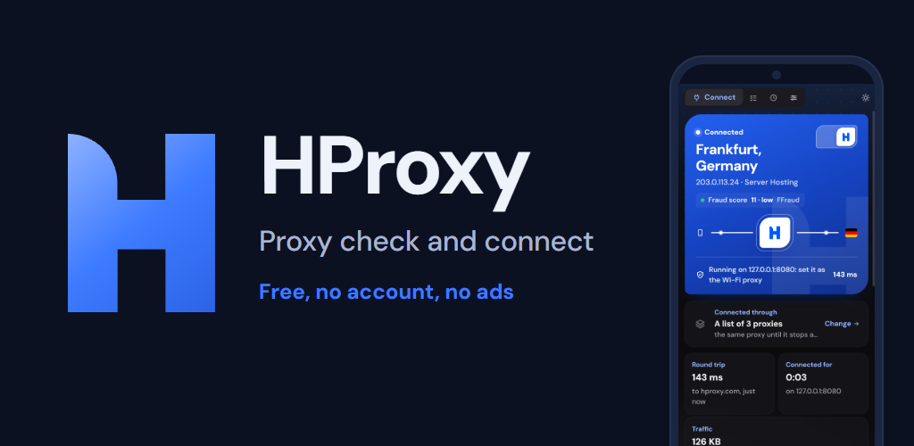
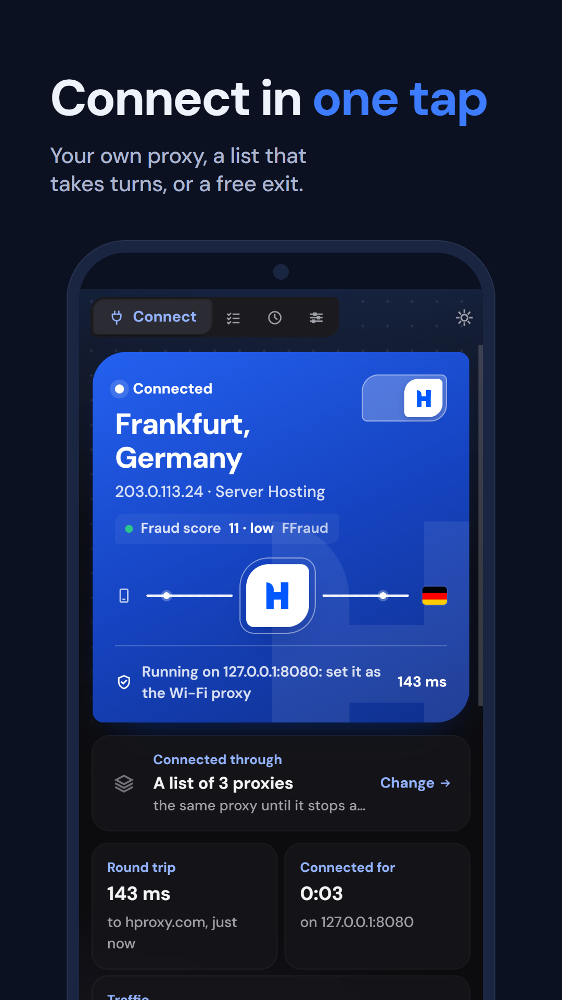
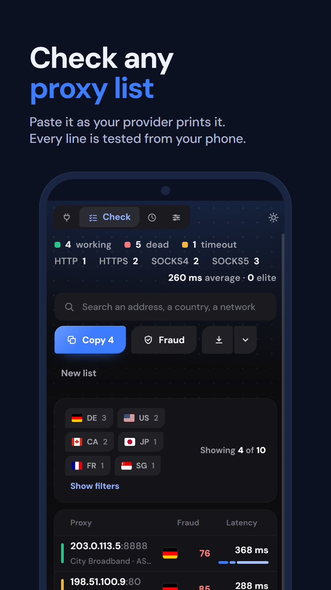
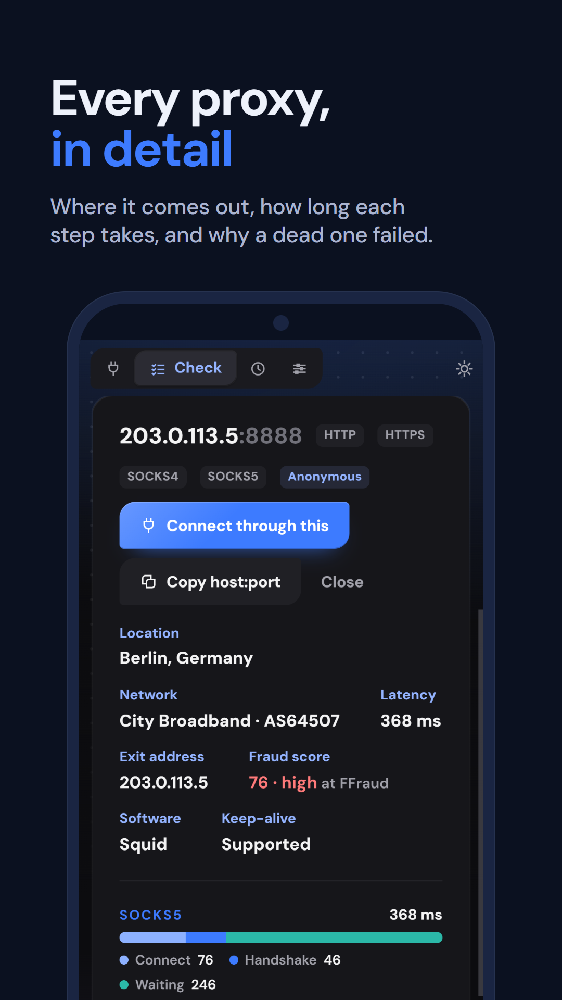
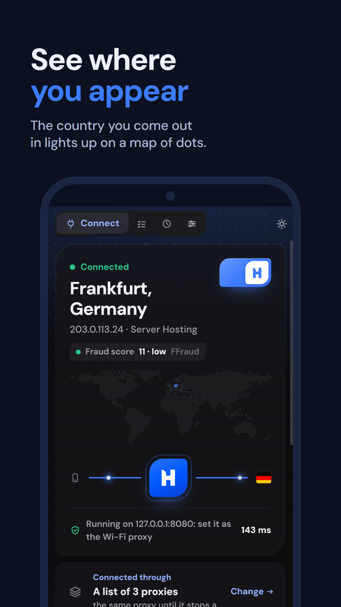
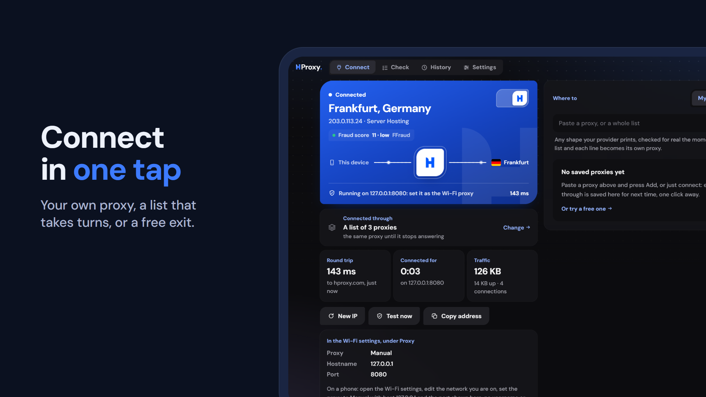
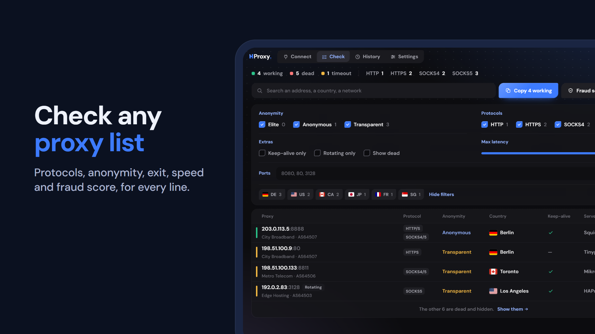

HProxy: Proxy Check & Connect
The pictures for the Google Play listing, drawn from the app's own screens. The dark look throughout (his pick), the blue H, example addresses and example networks only.
Feature graphic
1024 x 500, the banner at the top of the listing.

Phone (and 7-inch tablet)
1080 x 1920. A 7-inch tablet draws the same phone layout, so the same four go there.




10-inch tablet
1920 x 1080, the wide layout.

